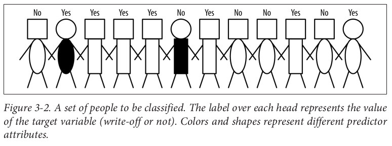

Fundamentos em Big Data
https://marc-queiroz.github.io/pos-uel-big-data/Pós gradução em Big Data 2019
Eu sou o Prof. Marc Queiroz, mestre em Ciência da Computação. Trabalhando a 6 anos como professor no Departamento de Computação da UniFil.
Engenheiro de software na Doiim, trabalhando com desenvolvimento de software desde os anos 2000. E recentemente trabalhando com Blockchain.
Tópicos:
- Big Data vs Data Science vs Data Analytics
- Mercado / Trilha de aprendizagem / Skills do Eng. de dados
Tópicos:
- O processo da Ciência dos Dados
- Exemplos: Ciência de dados, passo a passo.
- Tomada de decisão orientada por dados
- Ciência vs Tecnologia do Big Data
- Processo de mineração
- Python na análise de dados
O que é Big Data?

O que é Big Data?
- Coleção de tecnologias novas e antigas
- Qual o objetivo?
- Ajudar as empresas na tomada de decisão
Segmentação supervisionada
- Seleção de atributos informativos
- Critério de divisão: Ganho de informação
Roteiro:
- Introdução a Ciência de Dados
- Modelagem de dados
- Regressão linear
- Árvore de decisão
- Árvores de classificação
- Árvores de regressão
- Regressão Logística e Estimativa de probabilidade
- Sobreajustes
Processo de mineração de dados
Modelos, indução e previsão
- Modelo, representação simplificada da realidade
- Previsão, estimar o valor desconhecido de interesse
- A criação de modelos a partir de dados é conhecida como modelo de indução
Terminologia para classificação supervisionada
Conjunto de pessoas a serem classificadas
Equação da entropia
Entropia do conjunto de duas classes
Ganho de informação (GI)
IG - Information gain
Discussão sobre ganho de entropia
Discussão sobre ganho de entropia
O que é uma árvore de decisão
Ajustando o modelo aos dados
Limite de decisão
Possíveis funções lineares
Mineração de um discriminante Linear a partir dos dados http://archive.ics.uci.edu/ml/datasets/Iris
Exemplo de regressão utilizando Regressão Logística e Máquinas de vetores de suporte
Exemplo Regressão Linear Simples
Regressão logística
Modelo linear geral
Regressão LOGística
Função linear das chances de log
Função logística de probabilidade